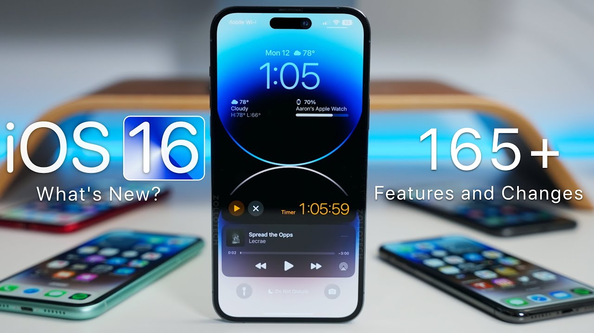

В iOS 16 оновлено дизайн замкненого екрана, зокрема додано нові можливості налаштування і віджети, щоб миттєво дізнаватися потрібну інформацію. Можна повʼязати замкнений екран із режимом зосередження і використовувати фільтри зосередження, щоб приховувати вміст, який може відвертати увагу. Завдяки значним оновленням у програмі «Повідомлення» тепер можна змінювати повідомлення і скасовувати їх надсилання. Функція «Візуальний пошук» дає змогу виокремити обʼєкт на тлі у зображенні та скопіювати й вставити його в програмі, як‑от «Пошта» чи «Повідомлення». iOS 16 також містить оновлення для програм «Пошта», «Карти», «Гаманець», «Здоровʼя» тощо.
Відомості про оновлення iOS 16

iOS 16
- Замкнений екран
-
Оновлений замкнений екран можна персоналізувати ще більше, використовуючи улюблені фотографії, змінюючи
стилі шрифтів, додаючи віджети тощо
- Safari й ключі допуску
- Спільні групи вкладок дають змогу поширювати набори вкладок і бачити зміни в групах вкладок, над якими ви працюєте разом з іншими учасниками
- Початкові сторінки груп вкладок можна змінювати, використовуючи різні зображення тла й улюблені сторінки для кожної групи вкладок
- Функція закріплення вкладок у групах дає змогу закріплювати часто відвідувані вебсторінки для кожної групи вкладок
- Можна створити кілька замкнених екранів, які легко й зручно перемикати
- Карти
- Можна додавати до пʼятнадцяти зупинок до маршруту у програмі «Карти»
- Додавши проїзні у програмі «Гаманець», можна переглядати баланс і поповнювати картки, не виходячи з Карт
- У розділі тарифів на проїзд можна переглянути, скільки коштуватиме ваша поїздка в районі затоки Сан-Франциско, Лондоні, Нью-Йорку та Сан-Дієго
- Галерея для замкненого екрана містить персоналізовані пропозиції та рекомендовані Apple колекції
- Доступні варіанти шрифтів і кольорів для налаштування вигляду дати й часу на замкненому екрані
- Віджети на замкненому екрані дають змогу негайно бачити інформацію, як‑от дані про погоду, заряд акумулятора, заплановані календарні події тощо
- Новий ефект розміщує обʼєкт із фотографії поверх часу (iPhone XS і новіші моделі)
- Стилі фотографій допасовують кольорові фільтри, відтінки й стилі шрифтів до фотографій на замкненому екрані
- Сповіщення зʼявляються в нижній частині замкненого екрана у вигляді розгорнутого списку, стосу або із зазначенням кількості
- Режими зосередження
- Замкнений екран можна повʼязати з режимом зосередження: щоб активувати режим зосередження, просто перейдіть на відповідний замкнений екран
- Фільтри зосередження приховують вміст, що може відвертати увагу, у програмах, як‑от «Календар», «Пошта», «Повідомлення», Safari, а також програмах сторонніх розробників
- Удосконалений процес налаштування дає змогу швидше й легше почати використовувати режими зосередження завдяки персоналізованим пропозиціям для замкненого й початкового екранів, зокрема щодо програм і віджетів, придатних для певного режиму зосередження
- Повідомлення
- Текст повідомлення можна змінити впродовж 15 хвилин після надсилання, і отримувачі побачать внесені зміни
- Можна скасувати надсилання будь-якого повідомлення впродовж 2 хвилин після надсилання
- Можна легко повернутися до обговорення пізніше, позначивши його як непрочитане
- Функція SharePlay у програмі «Повідомлення» дає змогу під час обміну повідомленнями переглядати фільми, слухати музику, грати в ігри тощо разом із друзями
- Функція співпраці дає змогу легко запрошувати інших до спільної роботи над файлом через програму «Повідомлення» і бачити оновлення в гілці, коли хтось вносить зміни до спільного проєкту
- Пошта
- Удосконалена функція пошуку знаходить точніші та повніші збіги й надає пропозиції, щойно ви починаєте вводити текст
- Можна скасувати доставку листа протягом 10 секунд після надсилання
- Функція надсилання за розкладом дає змогу надсилати листи в певний час і день
- Функція нагадування дає змогу задавати дату й час, коли потрібно нагадати про лист